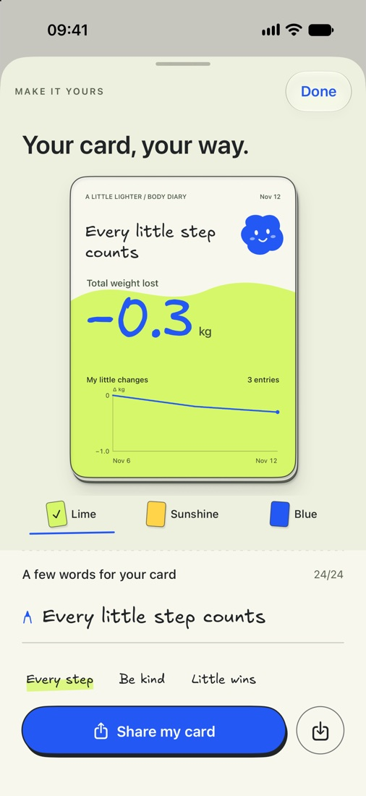
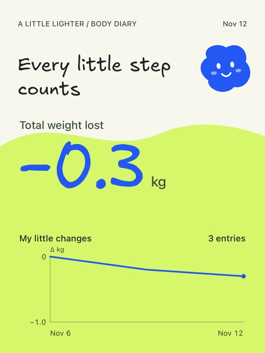

How to Share Weight Progress Without Showing Your Weight
Make a progress card on iPhone that shows how your weight changed while keeping your starting and current weights private.
Make and share a progress card
- Log an entry and tap Save & make my card. If you already have an entry, tap Customize on the Today tab.
- Choose Lime, Sunshine, or Blue. Add a short message if you want to include one.
- Tap Share my card to open the iPhone share sheet, or tap the save icon beside it to add the image to Photos.


What people can see
The exported image shows the front of the card. It includes your overall change in kilograms, a chart relative to your starting point, and any message you added. The starting and current weights appear on the card’s back in your app. Before sharing, check the message you typed for any personal details.